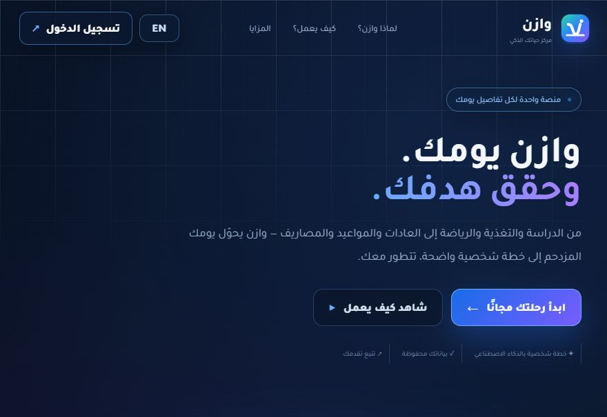
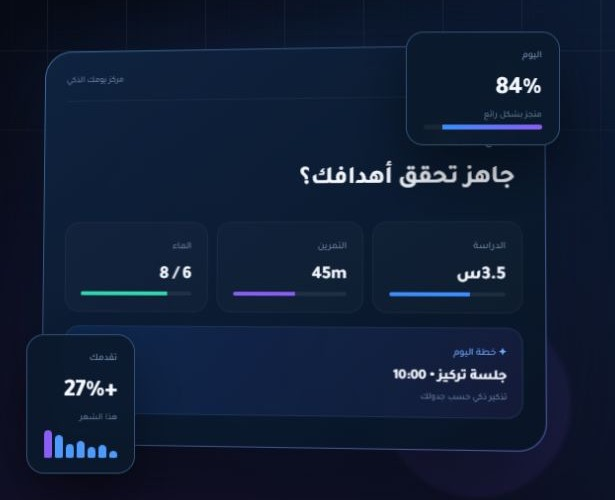

01
Set your priorities
The setup asks about the areas you want to work on, such as studying, nutrition, and fitness.
02 / Daily planning
A daily plan built around your priorities.
Wazen brings study, nutrition, exercise, habits, and expenses into one planning space.
Open Wazen
Study, exercise, and habits generate different kinds of tasks. The challenge was to turn those inputs into a daily plan users could scan quickly.
I separated setup from daily use. Setup collects goals and routines, while the dashboard puts daily priorities, reminders, and progress in one view.
01
The setup asks about the areas you want to work on, such as studying, nutrition, and fitness.
02
The dashboard brings scheduled tasks, habit progress, and reminders into a daily view.
